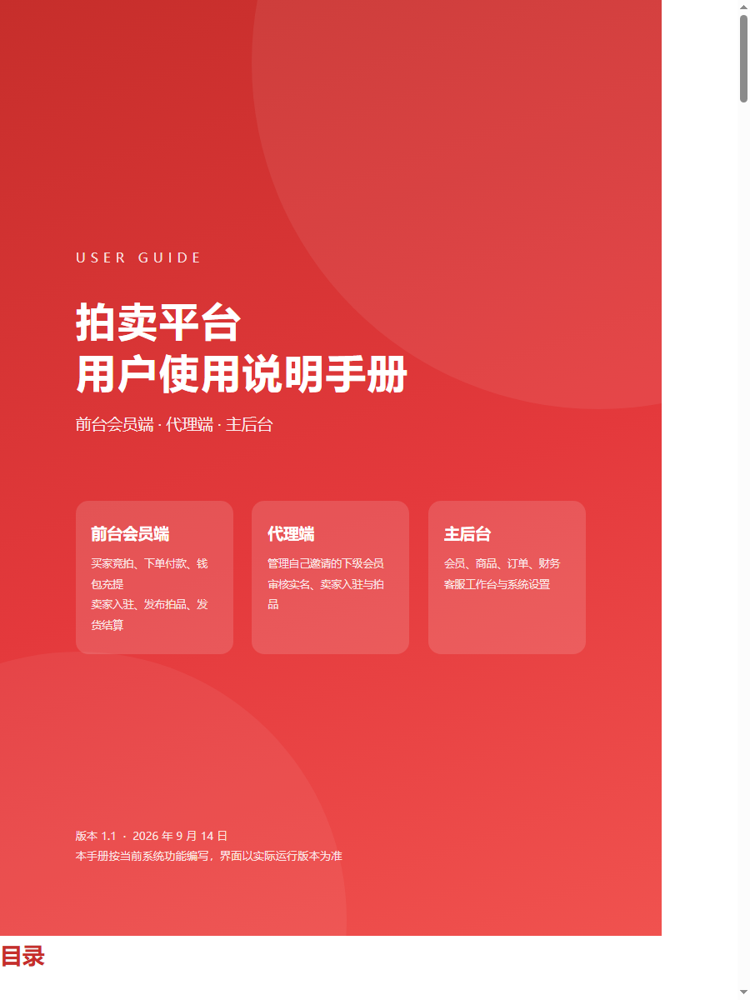

竞拍平台 用户使用说明手册
前台（买家 / 卖家） · 主后台 · 代理后台 · 定时脚本
版本 2.0 · 2026 年 9 月 17 日
目录
- 第一部分前台使用说明（买家 / 卖家）
- 1.1 注册与登录 1.2 首页与浏览拍品 1.3 实名认证 1.4 钱包、充值与提现
- 1.5 出价与竞拍规则 1.6 买家订单 1.7 卖家功能 1.8 消息与客服 1.9 个人中心其它功能
- 第二部分主后台使用说明
- 2.1 登录与安全 2.2 数据中心与数据报表 2.3 会员管理 2.4 商品管理 2.5 竞拍管理
- 2.6 订单管理 2.7 财务管理 2.8 系统设置
- 第三部分代理后台使用说明
- 第四部分定时脚本与部署
- 附录状态说明 · 常见问题
第一部分 前台使用说明（买家 / 卖家）
前台为手机端页面，电脑浏览器访问时会自动居中显示为手机宽度。底部导航固定为「首页 / 分类 / 发布 / 我的」，中间红色「+」为卖家发布拍品入口。全站支持简体中文、繁體中文、English 三种语言，可在登录页右上角或个人中心的「语言」按钮切换。
1.1 注册与登录
注册
- 入口：登录页底部「立即注册」。
- 手机号必须是 13～19 开头的 11 位真实手机号；12 开头的号码属于后台创建的虚拟会员，不能自行注册。
- 密码至少 6 位，两次输入需一致；需填写 4 位数字图形验证码，看不清可点击图片刷新。
- 邀请码：填写推荐人的邀请码后成为其下级会员。后台「注册必须填写邀请码」开启时为必填，关闭时可不填（不填则没有上级）。填写时会校验邀请码是否存在。
- 注册即同意《用户协议》《隐私政策》，两份协议可在登录 / 注册页点击查看。
登录
- 手机号 + 密码 + 4 位数字验证码。虚拟会员（12 开头）同样可以登录。
- 同一账号连续输错 5 次、或同一 IP 连续输错 20 次，锁定 10 分钟。
- 登录页有「联系客服」按钮，未登录的游客也可以直接向平台客服发消息（见 1.8）。
- 忘记密码请联系客服，由平台在后台重置。
1.2 首页与浏览拍品
| 区域 | 说明 |
|---|
| 轮播图 | 后台「轮播管理」配置，可跳转到指定链接。 |
| 分类图标 | 点击进入该分类的拍品列表；「分类」底部导航进入分类总览。 |
| 成交动态 | 滚动展示最近成交记录（买家昵称脱敏显示），点击可查看更多成交。 |
| 搜索 | 按拍品标题关键词搜索拍卖中的拍品。 |
| 拍品列表 | 展示封面、标题、当前价、剩余时间、出价次数；上拉自动加载更多。 |
| 关于我们 | 首页底部卡片展示前 3 行，点「更多」进入完整页面（后台可编辑）。 |
拍品详情页
- 显示图片、标题、当前价、起拍价、加价幅度、保证金、竞拍延时规则、截拍倒计时、出价次数、浏览量、卖家店铺信息、图文描述。
- 「出价记录」列出所有出价（出价人昵称脱敏），最高一条标「领先」。
- 可「关注拍品」「关注店铺」，之后在个人中心查看；浏览过的拍品会记入「我的足迹」。
- 可点击「联系卖家」进入与该拍品卖家的站内聊天。
- 保留价只有卖家本人在详情页能看到，买家不可见。
1.3 实名认证
- 入口：个人中心 → 我的服务 → 实名认证；头部未实名时显示黄色「未实名 ›」标签，点击可直接进入。
- 填写真实姓名、18 位身份证号，上传身份证正反面照片后提交，状态变为「审核中」。
- 由平台后台或所属代理审核，通过后显示「已实名」；未通过会显示原因，修改后可重新提交。
- 出价、申请成为卖家、提现之前都必须完成实名认证（后台创建的虚拟会员除外）。
1.4 钱包、充值与提现
我的钱包
- 顶部卡片显示总资产、可用余额、冻结保证金、总收入 / 总支出，下方是「申请提现」「充值」按钮。
- 「资产明细」按时间倒序列出全部流水，右上角可按类型筛选（充值 / 保证金 / 支付 / 收入 / 退回 / 提现 / 奖励 / 没收）：点击后从屏幕底部弹出滚动选择框，滑到需要的类型后点「确定」。
- 「全部流水 ›」进入「余额明细」页，同样支持底部滚动选择框按类型筛选，并显示每条流水的备注与变动后余额。
充值
- 入口：钱包页「充值」。填写充值金额提交后生成充值申请，页面显示平台收款方式与客服联系方式。
- 线下转账后由平台后台「充值审核」确认到账，通过后余额立即增加；同一时间只能有一笔充值申请在审核中。
- 「充值记录」查看历次申请及审核状态。
提现账户与提现
- 提现前需在「提现账户」绑定收款方式（微信 / 支付宝 / 银行卡，可上传收款码）。
- 「申请提现」填写金额并选择已绑定的账户。规则由后台设置：手续费按百分比扣除（实际到账 = 申请金额 − 手续费）、单笔最低 / 最高金额。
- 提交后金额立即从可用余额冻结；平台审核通过即打款、冻结清零，拒绝则金额退回可用余额并显示拒绝原因。同一时间只能有一笔提现在审核中。
- 「提现记录」查看历次申请及状态。
1.5 出价与竞拍规则
| 规则 | 说明 |
|---|
| 出价条件 | 已登录且已实名；拍品处于拍卖中且在开拍时间之后、截拍时间之前；不能给自己发布的拍品出价。 |
| 出价金额 | 首次出价不低于起拍价；之后每次必须在当前最高价基础上按「加价幅度」的整数倍递增。 |
| 领先者限制 | 当前最高出价者不能再给自己加价，需等其他人出价超过后才能继续。 |
| 保证金 | 拍品设置了保证金的，首次出价时从可用余额冻结相应金额（余额不足会提示先充值）；未中标、流拍、拍品下架时自动退回。 |
| 出局通知 | 被别人超过时会收到站内信「竞拍出局通知」，可再次出价。 |
| 竞拍延时 | 截拍前 N 秒内有新出价则自动延长截拍时间（N 由后台默认值或拍品单独设置，0 为不延时）。 |
| 成交 | 到截拍时间由系统结算：最高出价者中标并自动生成待付款订单，其余出价者保证金退回。 |
| 流拍 | 无人出价，或最高出价低于卖家设置的保留价时流拍，所有保证金退回。 |
我的出价记录
入口：个人中心 → 我的服务 → 出价记录。每条显示拍品、我的出价、状态标签（领先 / 出局 / 流拍）和时间；拍品因未达保留价流拍时，该条下方会有红字「尚未达到卖家预期价格」。点击可进入拍品详情。
1.6 买家订单
入口：个人中心「买家订单」区块（待付款 / 待发货 / 待收货 / 已完成，带数字角标）或「查看全部」。
| 状态 | 说明与可做的操作 |
|---|
| 待付款 | 中标后生成。点「去付款」选择收货地址后用余额支付，已冻结的保证金自动抵扣；余额不足会提示还需支付的金额并引导充值。可点「取消」放弃订单。超过后台设置的时长未付款，系统自动取消。 |
| 待发货 | 已付款，等待卖家发货。 |
| 待收货 | 卖家已发货，页面显示快递公司和单号（可一键复制）。收到货后点「确认收货」；超过后台设置天数未确认的，系统自动确认。 |
| 已完成 | 交易完成，成交款结算给卖家。商品有问题可点「申请售后」，填写理由（至少 5 个字）后转为售后单，由平台处理。 |
| 售后中 | 等待平台处理。同意退款则货款退回买家余额并从卖家收入扣回；驳回则订单恢复已完成。 |
| 已取消 | 买家取消或超时未付款。保证金按后台「未付款订单的保证金处理」设置处理：没收归平台 / 赔付给卖家 / 退还给买家，并发送站内信说明。 |
1.7 卖家功能
申请成为卖家
- 入口：个人中心「申请成为卖家」卡片。必须先完成实名认证。
- 后台「卖家开通审核」需要审核时：填写店铺名称、企业名称并上传企业资料（营业执照 / 资质证明），提交后等待平台或代理审核。
- 后台设为无需审核时：点击卡片即一键开通，店铺名默认为「昵称的店铺」，可在后台修改。
发布拍品
- 入口：底部「发布」按钮或个人中心卖家专区。
- 填写：拍品名称、分类、起拍价、加价幅度、保留价（可选，不低于起拍价，低于此价不成交）、保证金（可选）、参考价（可选）、截拍时间（须晚于当前时间 1 分钟以上且在一年内）、竞拍延时秒数（可选）、图文描述。
- 至少上传 4 张不同角度的商品照片，勾选同意《发布协议》后提交。
- 后台「发布商品审核」开启时进入待审核，审核通过后上架；关闭时直接上架。审核未通过会显示原因，可修改后重新提交。
我的商品
- 列出全部拍品及状态（待审核 / 拍卖中 / 已成交 / 流拍 / 已下架 / 审核拒绝），拍卖中的显示「当前最高竞拍价」。
- 操作：下架（已有出价时会提示出价次数，下架后本次竞拍取消并退还全部买家保证金）、上架、删除（拍卖中 / 已成交不能删除）、修改截拍时间、流拍拍品可「重新上架」或「一键全部重新上架」。
卖家订单与发货
- 入口：个人中心卖家专区「卖家订单」，有待发货订单时显示红色角标。每张订单显示成交价与起拍价、买家、状态。
- 买家付款后点「发货」，弹窗中显示买家收货姓名 / 电话 / 地址，填写快递公司和单号后确认。
- 成交款在买家确认收货（或系统自动确认）后才入账：卖家实收 = 成交价 − 平台佣金，并收到站内信「成交款到账通知」。付款后超过后台设置天数未发货，每天会收到催发货站内信并扣 1 分信誉分。
- 「店铺首页」展示店铺信息、星级、信誉分与在拍拍品，买家可关注。
1.8 消息与客服
| 功能 | 说明 |
|---|
| 站内信 | 系统通知：竞拍出局、拍品下架、成交款到账、订单取消、买家未付款、自动确认收货、发货提醒，以及平台人工发送的消息。列表按时间倒序，未读加粗，点击查看详情。内容随界面语言自动翻译。 |
| 消息 | 买家与卖家围绕某件拍品的站内聊天，列表显示每个会话的最新一条与未读数。发送间隔 3 秒。 |
| 联系客服 | 与平台客服一对一聊天，支持文字和图片。未登录游客也可以在登录页发起咨询，登录后记录自动并入本人账号。 |
个人中心「我的服务」中的站内信 / 消息 / 联系客服图标有未读时显示红色角标并抖动提醒，每 60 秒自动刷新。
1.9 个人中心其它功能
| 头部 | 头像、昵称（点击可修改资料）、脱敏账号、身份标签（已实名 / 未实名、卖家、代理）、语言切换。 |
| 资产卡 | 可用余额、充值 / 提现按钮，以及关注拍品、关注店铺、我的足迹三个入口。 |
| 设置管理 | 修改头像、昵称。 |
| 修改密码 | 输入原密码与新密码（至少 6 位）。 |
| 收货地址 | 新增 / 编辑 / 删除地址，可设默认地址；付款时选择。 |
| 提现账户 | 绑定微信 / 支付宝 / 银行卡收款方式。 |
| 邀请好友 | 展示我的邀请码，可一键复制；好友注册时填写即成为我的下级。 |
| 代理中心 | 仅代理会员可见，点击进入代理后台（免重复登录）。 |
| 退出登录 | 页面底部。 |
第二部分 主后台使用说明
地址：https://你的域名/admin1314/。菜单：数据中心、数据报表、会员管理、商品管理、竞拍管理、订单管理、财务管理、系统设置。所有列表页支持关键词搜索、状态筛选和每页条数选择（15 / 30 / 50 / 100）。
2.1 登录与安全
- 用户名 + 密码 + 4 位数字验证码；同一 IP 连续输错 5 次锁定 10 分钟。
- 「后台登录谷歌验证码」开启后，登录还需输入 Google Authenticator 等验证器的 6 位动态码。未绑定的管理员首次登录会被引导到「谷歌验证」页扫码绑定；超级管理员可在「管理员管理」中重置他人绑定。
- 所有改动状态的操作都会写入「操作日志」，记录管理员、动作、IP 和时间。
2.2 数据中心与数据报表
- 系统概览：会员、卖家、拍品、订单、待审核事项、资金等实时统计与快捷入口。
- 交易报表：选择日期范围与维度（日 / 周 / 月）查看成交单数、成交额、佣金、买家数趋势，以及新增拍品、成交、注册等汇总。
2.3 会员管理
会员列表
- 搜索：手机号 / 昵称 / ID；筛选：卖家、代理、虚拟会员、状态。列表显示余额、冻结、上级、身份等。
- 编辑弹窗集中处理：重置密码、修改上级（按手机号搜索选择）、设为 / 取消卖家、设为 / 取消代理、标记 / 取消虚拟会员。
- 登录会员：生成一次性登录链接并在新窗口以该会员身份打开前台，用于协助排查问题（链接 2 分钟内有效，只能用一次）。
- 添加会员：可添加 12 开头的虚拟号码；批量添加虚拟会员：一次生成多个虚拟会员用于自动出价。
- 会员详情：查看资料、余额调整（加 / 减，写入流水并记录操作日志）、提现账户维护、发送站内信、禁用 / 启用。
实名认证 / 卖家审核 / 咨询审核 / 在线客服
- 实名认证：查看身份证信息与照片，通过或驳回（填写原因）。
- 卖家审核：审核卖家入驻申请（企业资料），通过后成为卖家；也可直接修改店铺名称、简介。
- 咨询审核：查看买家与卖家之间的站内聊天记录，可删除违规消息。
- 在线客服：左侧为会话列表（会员或游客，未读优先），右侧聊天窗口回复文字 / 图片；菜单上显示未读数角标。
2.4 商品管理
商品列表
- 搜索拍品标题 / 卖家手机号；按状态、分类筛选；列表显示卖家手机号、当前价、出价数、截拍时间等。
- 编辑：修改标题、分类、描述、图片、价格、截拍时间、浏览量等。已有买家出价的拍品，起拍价 / 加价幅度 / 保证金 / 保留价锁定不可改。
- 改时间：修改开拍与截拍时间。已有出价时开拍时间保持不变；截拍时间可提前或延后，但必须晚于当前时间 1 分钟以上。
- 下架 / 删除：已有出价的拍品下架或删除会取消本次竞拍、退还全部保证金并通知出价人；流拍重新上架可按新截拍时间重新开拍。
商品审核 / 分类管理
- 商品审核：卖家新发布的拍品在此通过或拒绝（填写原因）。
- 分类管理：新增 / 编辑 / 删除分类，上传分类图标，设置排序与启用状态；改动后前台立即生效。
2.5 竞拍管理
出价记录
- 搜索拍品标题 / 买家手机号 / 昵称，列表显示出价人手机号、出价、保证金、状态。
- 代出价：选择拍品与会员（可搜索），以该会员身份出价，规则与前台相同（会给被超过的买家发出局通知）。
- 删除出价：删除某条出价并退回其保证金、重算拍品当前价。
自动出价
- 为指定拍品设置由虚拟会员自动出价的计划：出价间隔（分钟，实际在 70%～130% 间随机）、最高出价金额、截拍前停止小时数。
- 列表按拍品标题 / 卖家手机号搜索，显示卖家手机号、拍品状态、已出价次数、下次出价时间；可暂停、恢复、删除。
- 后台「平台自营自动出价」开关开启时，会员 ID 1（平台自营账号）的拍品不能在这里手动添加计划，由脚本统一接管（见 2.8）。
- 计划由定时脚本
php think bid:auto 执行；虚拟会员出价不冻结保证金，出价被真实买家超过时正常发出局通知。
2.6 订单管理
- 订单列表：搜索订单号 / 商品名称 / 卖家手机号 / 买家手机号，按状态筛选。
- 详情页显示买卖双方、收货信息、金额（成交价、佣金、卖家实收）、物流信息。
- 操作：代卖家发货（填写快递信息）、完成（代买家确认收货并结算给卖家）、取消（货款退回买家；若卖家收入已入账则从其余额扣回；商品下架；双方收到站内信）。
- 售后管理：处理买家的售后申请，同意退款（退回买家、扣回卖家）或驳回，可填写处理备注。
2.7 财务管理
- 充值审核：搜索手机号 / 昵称。通过后余额入账并写流水；拒绝需填写原因。每笔申请只能处理一次。
- 提现审核：搜索手机号 / 昵称。通过表示已线下打款，冻结金额清零；拒绝则退回可用余额。虚拟会员的申请在手机号下方标注「（虚拟会员）」，请自行判断。
- 余额流水：搜索手机号 / 昵称，按类型筛选，查看全站资金变动。
2.8 系统设置
基础设置
| 卡片 | 设置项 |
|---|
| 后台安全 | 后台登录谷歌验证码开关。 |
| 站点基本信息 | 站点名称、站点网址、站点 Logo（建议透明底 PNG，宽高比约 4:1）。 |
| 客服联系方式 | 客服电话、客服 QQ、客服链接（充值页「联系客服」按钮跳转的外部链接）。 |
| 注册与审核 | 注册必须填写邀请码；卖家开通审核（需要审核 / 无需审核，无需审核时一键开通）；发布商品审核。 |
| 竞拍规则 | 平台佣金比例（成交后按比例扣除，0 为不收）；竞拍默认延时（秒，0 为不延时）。 |
| 流拍自动上架 | 自动上架的卖家 ID（默认 1）与重新上架后的拍卖时长（小时，0 为关闭）；截拍时间在此基础上每件随机延后 0～6 小时。由 goods:auto-relist 脚本执行。 |
| 平台自营自动出价 | 开关、出价间隔（分钟）、最高出价（起拍价的倍数）、截拍前停止出价（小时）。开启后会员 ID 1 的所有拍卖中拍品由脚本安排虚拟会员出价，之前手动添加的计划被接管；关闭后脚本任务停止。由 platform:auto-bid 脚本执行。 |
| 订单自动处理 | 待付款超时（小时）、未付款订单的保证金处理（没收归平台 / 赔付给卖家 / 退还给买家）、自动确认收货（天）、未发货提醒（天）；填 0 表示关闭。分别由 order:timeout、order:confirm、order:remind 脚本执行。 |
| 提现规则 | 提现手续费（%）、单笔最低 / 最高金额。 |
| 关于我们 / 业务部门 | 首页与「关于我们」页面的图文内容。 |
| 用户协议 / 隐私政策 / 发布协议 | 前台对应弹窗与页面展示的文本，支持按语言分别填写。 |
保存后设置立即生效（前台设置缓存会自动刷新）；平台自营自动出价的开关或参数保存时会立即同步一次任务。
其它
- 轮播管理：上传图片、设置链接、排序、启用；改动后首页立即更新。
- 管理员管理：新增 / 禁用管理员、重置密码、重置谷歌验证器绑定。
- 谷歌验证：当前管理员扫码绑定 / 更换验证器。
- 操作日志：全部后台操作记录，可按关键词查询。
第三部分 代理后台使用说明
地址：https://你的域名/agent/，也可从前台个人中心「代理中心」直接进入。使用前台代理会员的手机号和密码登录（需在主后台「会员列表 → 编辑」中设为代理）。登录失败 5 次锁定 10 分钟。
代理只能看到并处理自己直接下级会员的数据（团队范围），看不到其他会员；订单与售后只包含团队内卖家的订单。
| 菜单 | 功能 | 说明 |
|---|
| 团队概览 | 数据概览 | 团队会员数、今日 / 本月新增、团队成交、待办事项，以及最近 14 天入团趋势。 |
| 数据报表 | 团队业绩 | 按日 / 周 / 月查看团队成交单数、成交额、新增会员等。 |
| 会员管理 | 我的会员 | 下级会员列表，搜索手机号 / 昵称。可添加会员（上级固定为自己，可添加 12 开头虚拟号）、批量添加虚拟会员；「编辑」弹窗可重置密码、设为卖家 / 代理、标记虚拟会员（不能修改上级）；会员详情可余额调整、维护提现账户。 |
| 实名认证 | 审核下级会员的实名申请。 |
| 卖家审核 | 审核下级会员的卖家入驻申请，修改店铺信息。 |
| 产品管理 | 产品列表 | 下级卖家发布的拍品，可编辑（含浏览量）、改时间、上下架、删除、流拍重新上架，规则与主后台相同。 |
| 产品审核 | 审核下级卖家新发布的拍品。 |
| 竞拍管理 | 出价记录 | 团队会员的出价记录，搜索拍品标题 / 买家手机号 / 昵称；可代出价、删除出价。 |
| 自动出价 | 为团队卖家的拍品添加自动出价计划（平台自营开关开启时不能选卖家 ID 1 的拍品）。 |
| 订单管理 | 订单列表 | 团队卖家的订单，搜索订单号 / 商品名称 / 卖家手机号 / 买家手机号；可发货、完成。 |
| 售后管理 | 处理团队卖家订单的售后申请。 |
| 财务管理 | 充值审核 | 团队会员的充值申请。 |
| 提现审核 | 团队会员的提现申请，虚拟会员标注「（虚拟会员）」。 |
| 余额流水 | 团队会员的资金变动。 |
第四部分 定时脚本与部署
4.1 定时脚本
所有脚本在项目根目录用 php think 命令名 执行，可以手动运行，也可以加入 Linux crontab。每条命令只做自己的事，互不串联，每条内部带并发锁（上一轮未结束时本轮自动跳过）。
| 命令 | 建议频率 | 作用 |
|---|
php think settle | 每分钟 | 结算到期拍品：成交生成订单 / 流拍退保证金。 |
php think bid:auto | 每分钟 | 执行后台 / 代理后台手动添加的自动出价计划。 |
php think platform:auto-bid | 每分钟 | 同步并执行平台自营（会员 ID 1）拍品的自动出价。 |
php think goods:auto-relist | 每分钟 | 指定卖家的流拍拍品自动重新上架。 |
php think order:timeout | 每 5 分钟 | 待付款超时自动取消并按设置处理保证金。 |
php think order:confirm | 每小时 | 发货后超时未确认的订单自动确认并结算给卖家。 |
php think order:remind | 每天 | 付款后超时未发货的订单给卖家发催发货站内信并扣信誉分。 |
php think schema:clear | 手动 | 数据库加字段 / 加索引后执行一次，刷新表结构缓存。 |
crontab 示例（把路径换成实际路径）
PATH=/usr/local/bin:/usr/bin:/bin
* * * * * cd /www/wwwroot/jp && /usr/bin/php think settle >> runtime/log/cron_settle.log 2>&1
* * * * * cd /www/wwwroot/jp && /usr/bin/php think bid:auto >> runtime/log/cron_bid_auto.log 2>&1
* * * * * cd /www/wwwroot/jp && /usr/bin/php think platform:auto-bid >> runtime/log/cron_platform_auto_bid.log 2>&1
* * * * * cd /www/wwwroot/jp && /usr/bin/php think goods:auto-relist >> runtime/log/cron_auto_relist.log 2>&1
*/5 * * * * cd /www/wwwroot/jp && /usr/bin/php think order:timeout >> runtime/log/cron_order_timeout.log 2>&1
0 * * * * cd /www/wwwroot/jp && /usr/bin/php think order:confirm >> runtime/log/cron_order_confirm.log 2>&1
0 9 * * * cd /www/wwwroot/jp && /usr/bin/php think order:remind >> runtime/log/cron_order_remind.log 2>&1
- 每条命令运行后会刷新
runtime/命令名.heartbeat，用 ls -l runtime/*.heartbeat 可检查任务是否都在跑。
- 有实际动作或出错时写入
runtime/log/ 下对应日志（settle.log、auto_bid.log、auto_relist.log 等）。
4.2 部署要点
- 网站根目录必须指向
public/；vhost 中 include public/nginx.htaccess（含伪静态、上传目录只允许图片、禁止访问 tests 目录）。
.env：数据库、Redis（[REDIS] PREFIX 用于同一台服务器部署多套时区分缓存）、APP_DEBUG = false。- 上线或升级后执行
php think schema:clear；HTTPS 站点把 config/cookie.php 的 secure 改为 true。
- 不要把
tests/ 目录部署到线上。
附录
A. 状态说明
| 对象 | 状态 |
|---|
| 拍品 | 待审核 → 拍卖中 → 已成交 / 流拍；另有 已下架、审核拒绝。流拍可重新上架。 |
| 订单 | 待付款 → 待发货 → 待收货 → 已完成（→ 售后中 → 已完成）；待付款可变为 已取消。 |
| 充值 / 提现 | 待审核 → 已通过 / 已拒绝。 |
| 实名认证 | 未认证 → 审核中 → 已认证 / 未通过。 |
| 自动出价计划 | 运行中 / 已暂停 / 已结束（达到上限、进入停止时段、拍品结束或下架）。 |
B. 常见问题
| 问题 | 说明 |
|---|
| 买家出价了，截拍后却流拍 | 最高出价低于卖家设置的保留价。买家的出价记录会标「流拍」并提示「尚未达到卖家预期价格」。 |
| 后台改截拍时间提示必须晚于当前时间 | 截拍时间至少要在当前时间 1 分钟之后；已有出价时开拍时间不可改。 |
| 卖家成交后余额没有增加 | 成交款在买家确认收货（或系统自动确认）后才入账，之前可在卖家订单里看到状态。 |
| 平台自营拍品不能添加自动出价 | 「平台自营自动出价」开关开启时由脚本接管，关闭后可手动添加。 |
| 提现时提示已有一笔在审核中 | 同一时间只允许一笔提现申请，等待审核完成后再提交。 |
| 后台改了设置前台没变 | 设置、分类、轮播缓存会在保存时自动刷新；若仍未生效，检查 Redis 是否正常运行。 |
| 定时任务没有执行 | 检查 crontab 是否配置、runtime/*.heartbeat 是否更新、runtime/log/ 中是否有 ERROR。 |
本手册对应平台 2026 年 9 月 17 日版本，功能以实际系统为准。